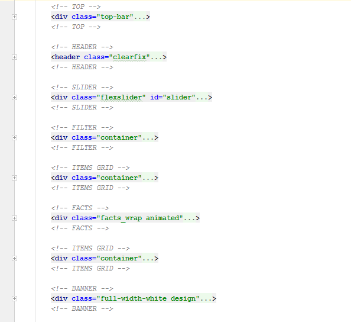

Created: 21/11/2015
By: Pixar Themes
Email: info@pixarwpthemes.com
Thank you for purchasing my product. If you have any questions that are beyond the scope of this help file, please feel free to contact us from our dedicated support site here. Thanks so much!
This theme is a responsive layout with three and four columns. Made with twitter Bootstrap 3. The general structure throughout the template is same and common. Every section is very well commented and the whole code is indented properly that gave a very clean looked structure.
This template includes Nine (9) different CSS files. The file style.css is the main file having all the necessary styles of the site, fonts and a CSS reset. Keep in mind, that these values might be overridden somewhere else in the file.
The file responsive.css contains all of the specific custom styling for the responsiveness of the site.
The file bootstrap.css is the main Bootstrap 3 framework file that is very necessary for the structure of the template.
Other files are the plugins that are required for some functionalities of the template.
If you would like to edit a specific section of the site, simply find the appropriate label in the CSS file, and then scroll down until you find the appropriate style that needs to be edited.
This theme imports 15 Javascript files.
In addition to the custom scripts, I implement a few "tried and true" plugins to create the effects. This plugin is packed, so you won't need to manually edit anything in the file. Checkout all the plugins used in the template.
PSD files are included with the template for free.
All the images used in the demo of the template are not included with it and cannot be used without the prior permission of the original authors of the images or files.
The JS plugins used in the template (listed above) are all open source and free to use.
Fonts:
All the fonts used in this template are open source, free to use google websafe fonts.
If you are facing any issue with template please feel free to contact us via our dedicated support forum. http://pixelartsupport.ticksy.com/
Once again, thank you so much for purchasing this template. As I said at the beginning, I'd be glad to help you if you have any questions relating to this theme. No guarantees, but I'll do my best to assist. If you have a more general question relating to the themes on ThemeForest, you might consider visiting the forums and asking your question in the "Item Discussion" section.
Pixar Themes